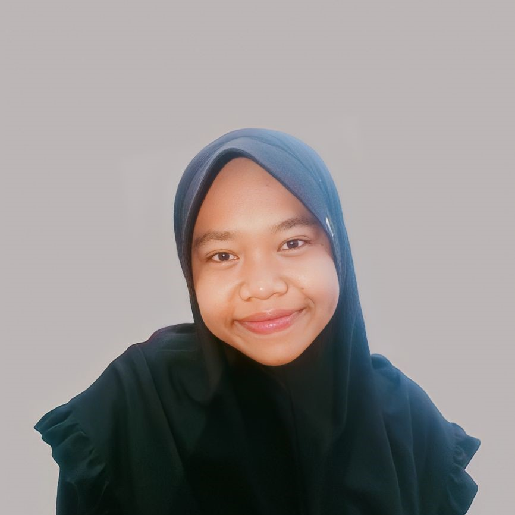

Hawa Shabilla Fanfa
22082010239
Saya lahir di Kota Purbalingga pada tanggal 10 Maret 2004. Saat ini, saya tengah menempuh pendidikan di Universitas Pembangunan Nasional
“Veteran” Jawa Timur, dengan jurusan yang saya ambil adalah Sistem Informasi di Fakultas Ilmu Komputer. Minat utama saya terfokus pada
perpaduan antara UI/UX dan Programmer. Saya sangat aktif dalam berbagai kegiatan yang diadakan di dalam Universitas saya. Saya senantiasa
mencari peluang-peluang baru untuk memperluas pengalaman dan meningkatkan keterampilan saya.

Roudhotul Izzah I
22082010244
Saya lahir di Kota Surabaya, 14 Februari 2004. Saya adalah seorang mahasiswa aktif di jurusan Sistem Informasi, fakultas Ilmu Komputer,
Universitas Pembangunan Nasional “Veteran” Jawa Timur yang memiliki ketertarikan di bidang bisnis dan teknologi. Saya aktif dalam
mengikuti berbagai kegiatan yang menunjang ketertarikan saya baik di dalam maupun di luar kampus, seperti organisasi. Saya membuka peluang
sebanyak-banyaknya untuk diri saya dalam rangka mendapatkan pengalaman baru serta meningkatkan kemampuan saya.

M. Rifki Syahada
22082010259
Lahir di Maumere (Nusa Tenggara Timur) pada tanggal 24 April 2003, saya adalah seorang mahasiswa yang aktif di jurusan Sistem Informasi di
Universitas Pembangunan Nasional “Veteran” Jawa Timur. Saya memiliki minat yang besar dalam bidang Design. Saya juga aktif dalam
kegiatan-kegiatan yang ada di luar kampus yang sejalan dengan bakat dalam diri saya. Saya percaya bahwa setiap kesempatan adalah peluang
untuk belajar dan tumbuh, dan saya berkomitmen untuk terus mencari pengalaman baru dan menantang diri saya sendiri.